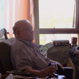
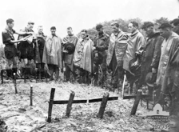
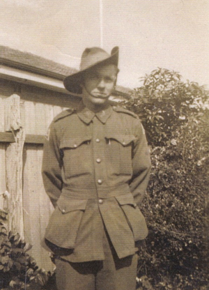
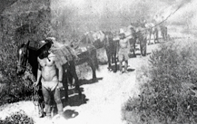

John Edgar Stait “Pancho” - NX38600



As the 2/3rd straggled onto the parade ground George Warfe stepped out in front of them, looked them up and down and in a very loud and firm voice said ”I don’t like the way you fall in, I don’t like the way you dress, and I don’t like the way you keep camp. In fact I don’t like anything about you. I will make soldiers of you if it’s the last thing I do!”
George soon knocked the 2/3rd into shape. His training was hard and ruthless. The training at Yandina and at Canungra in the Lamington National Park forged them and its value was borne out in subsequent operations.
The men of the 2/3rd were still a fairly wild and independent mob and this was borne out by their involvement in “The Battle of Brisbane” referred to by John in his story The Battle of Brisbane and Other Stories. This led to their rapid deployment to New Guinea.
new guinea action The Unit arrived in Port Moresby on the 21st January 1943 where they had their first experience of direct enemy action. When the Japanese attacked Wau most of the 2/3rd were flown there in full fighting kit. For the next 8 months they were to be involved in guerilla warfare on the most arduous tracks in New Guinea. They trekked over Double Mountain more than 8000 feet above sea level carrying all their arms and supplies to establish HQ at Missim. Of the 290 men who had landed at Wau in January only 34 were still in the company in September. 65 were killed, 119 wounded and 226 evacuated for medical reasons. The men patrolled in groups of 3 and Normie Bear and ‘Sticky’ were part of Pancho’s team, although Tiny Tillson, Baldy Poulson and others were part of his team at different times.
‘Norm Bear remembers the dreadful impact that harsh living conditions had on the members of the unit, during the long period of constant fighting and pursuit:
“We had been on the Jap Track for a couple of weeks engaged in close combat with retreating, sick Japs. Their dead and excreta littered the track. We became very sick ourselves as we caught many of the Jap diseases. Our continual operation in mountainous jungle soaked with constant rain, ruined any chance of possessing dry clothing. Because of the weight we carried, underclothing and other non-vital gear had long been discarded, Bill Sticklan’s constantly wet trousers had badly chafed his whole scrotum. It was too painful to wear his trousers so he threw them away and wrapped some 4” x 2” flannelette (rifle cleaning cloth) around his groin complete with a neat bow! A fairly short army shirt did nothing to improve Bill’s profile.” Garland, Ron. Nothing is Forever.

John Stait (4th from right )
at funeral of 3 comrades killed in the Timbered Knoll attack.

![What you should know
Stait, John Edgar ‘Pancho’ – Sapper, Sniper and Vicker’s gunner. Born Lithgow, New South Wales. Enlisted Paddington, N.S.W., 14 Jul 1941. Initially enlisted in the Australian Army Remounts but subsequently joined 2/3 Independent Company. Served in New Caledonia, New Guinea and Borneo. He was a member of B Platoon. Discharged 23 Sept. 1946 - Saddler and horse-breaker


Sketch of Peter Pinney
by Ivor Hele
Peter was a close friend of Pancho Stait’s and they remained lifelong friends. Peter Pinney was the godfather of Margaret Stait, John and Valerie’s daughter. Peter’s book The Barbarians is an account of the experience of the 2/3 Independent Company during the Wau-Salamaua Campaign. It is taken from Peter’s diary which he kept throughout the war. He has slightly altered some of the characters but the story gives a very clear picture of the experience of these men in the war.
Peter went on to become an adventurer and well known travel writer after the war and his life can be viewed on the website Dust on My Shoes.](John_Edgar_Stait__Pancho__files/shapeimage_7.png)

